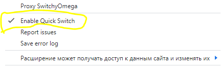

| Ник | Пост | Дата |
|---|---|---|
| Verity-Freedom | Ниже выложена новейшая юзер-френдли инструкция по настройке Tor Portable и всех его компонентов для разблокировки практически всех заблокированных сайтов. Качаем программу здесь. ИнструкцияДля начала нам необходимо поставить расширения. Начнём с Обхода блокировок рунета — используем его как чекер, будет выводить нам домёны страницы при наведении на него мышкой, которые затем можно ввести в проксируемые Тором исключения. Поставили его и сразу отключили. Даже отключённым он сможет исполнять свою единственную нужную нам функцию. Обязательно закрепите и его, и Омегу в панель расширений. Чекер будет работать корректно только в режиме TOR, про режимы будет рассказано позднее. Если чекер внезапно перестал работать, это могло произойти из-за использования стороннего VPN. Для возобновления его работоспособности я ПОЛНОСТЬЮ отключаю его (не как пункт в меню, а как расширение для браузера) и включаю вновь. Для меня это проблема, ибо иногда я использую сторонние VPN. Дальше нам необходимо поставить расширение SwitchyOmega или же ZeroOmega. Разница между ними в том, что ZeroOmega не грозит отключение в Google Chrome, ибо он написан на более новом языке программирования, но какого-либо значительного функционала в него не привнесли, и лично я использую SwitchyOmega. Файлы расширений находятся в папке, не пытайтесь установить SwitchyOmega на Файрфокс из магазина — он слишком стар там и не будет работать корректно, запустится только из файла. Также рекомендую сразу же поставить лучший Адблок — Ublock Origin, он нам понадобится, чтобы противостоять рекламе разблокированного Ютуба. Ставить ZeroOmega крайне рекомендуется в обыкновенный Google Chrome, а SwitchyOmega в кастомные и старые браузеры. Откройте папку AntiTor, найдите папку zapret-discord-youtube, запустите general.bat или же один из general (ALT).bat (для работы на Win 7 необходимо сначала запустить файл FIX ZAPRET WIN 7.cmd, также вариантом фикса является интеграция некоторых платных обновлений в Windows 7). Это разблокирует нам Дискорд, но также способно починить Ютуб даже без Тора (с сохранением геоограничений, что неоптимально). Быстро проверить, сработало или нет, можно попытавшись зайти на адрес discord.com — если не вышло, запускайте ALT поочерёдно. Запрет будет работать одновременно с Тором, но снизу в этом случае появятся сразу два окна. Чтобы убрать окно Тора, если он уже был запущен, но сохранить его работоспособность, вы можете сначала выйти из него, а затем запустить его как службу через antitor-service.cmd, и открыть тот же antitor-service.cmd, если хотите удалить службу. Сам Тор запускается через AntiTor.exe, думаю это довольно очевидно. Одновременно и служба, и окно AntiTor.exe работать не будут, вам нужно сделать выбор. Для настройки Омеги нам понадобится содержимое readme-omega.txt, которое я здесь и выложу. Далее мы к нему вернёмся. https://disk.yandex.ru/d/XpKKtN9K2McDmA https://p.thenewone.lol:8443/proxy.pac 127.0.0.1 9050 [SwitchyOmega Conditions] @with result *.onion +TOR *.habr.com +TOR *.voidboost.cc +TOR *.clarity.ms +TOR *.hdrezka.ag +TOR *.youtube.com +TOR *.youtu.be +TOR *.ytimg.com +TOR *.googlevideo.com +TOR *.googleapis.com +TOR *.googleusercontent.com +TOR *.ggpht.com +TOR * +PAC Поставьте и уберите галочки как у меня здесь. Жёлтым цветом я выделил то, что делать необязательно, но желательно. В данном случае я убрал вам перезагрузку вкладки при смене режима и выделил это жёлтым цветом, а красным потребовал у вас убрать прокликивание дополнительных подтверждений при настройке (эти подтверждения он и так и так будет у вас спрашивать, просто иначе они будут в двойном количестве). Жёлтым я также выделил режим system proxy, в котором Тор полностью отключен, но может быть использован системный VPN — используйте его в зависимости от надобности. Вам необходимо сделать названия режимов такими же, как и у меня, позже поймёте, почему. Вы можете понять, какой режим в какой у меня переименован по их значкам, ибо значки обозначают типы режимов. Вместо того чтобы переименовывать можете и создать режим, главное, чтобы его тип совпал в конечном итоге с названием. Настраиваем режим TOR как показано здесь: Можете скопировать нужные нам значения выше из readme-omega.txt или написать их самостоятельно. Создаём абсолютно новый режим PAC в типе PAC Profile. Необходимо только для россиян. В этом режиме мы вставляем ссылку https://p.thenewone.lol:8443/proxy.pac и нажимаем скачать профиль (download profile). После сохраняем изменения. Это скачает нам Антизапрет — прокси с раздельным туннелированием для разблокировки основной части заблокированных сайтов. Так как только теперь у нас готовы все режимы, я хочу, чтобы вы убедились, что у вас включен quick switch в настройках Омеги, и все режимы в нём стоят корректно. Это понадобится нам в будущем. Далее мы переходим в режим AUTO. У вас он ранее назывался как-то иначе, но там всегда было слово auto. Нажимаем Edit source code и вставляем содержимое readme-omega.txt сверху, начиная от [SwitchyOmega Conditions] и заканчивая * +PAC. Это сконфигурирует режим AUTO так, что большинство сайтов не будет проксироваться, основная часть заблокированных сайтов будет пускаться через PAC Антизапрет, и только несколько сайтов будут пускаться через Тор, ибо Антизапрет слишком медленный и тот же Ютуб практически не проксирует (только аватарки). Именно здесь важно, что у вас названия должны совпадать с моими, ибо названия всех режимов активно используются в этом коде. Тор уберёт на Ютубе геоблокировки ценой появления рекламы. Вы должны были не забыть поставить Ublock Origin. Если вы правильно настроили quick switch, режимы вы можете переключать кнопкой мыши. Режимов три — system, AUTO и TOR. Про system и AUTO я уже рассказал выше, а вот в режиме TOR мы можем снимать блокировки со всяких спотифаев и чатжпт ценой отключения доступа к российским сайтам по типу госуслуг и некоторых других, которые блокируют Тор на стороне. Не забудьте, что только в режиме TOR будет корректно работать чекер, который мы настроили в самом начале. Чтобы вы не запутались между режимами, я рекомендую выставить их цвета такими же, как и у меня. Хотя вы можете забить на это или напротив проявить креативный подход. Режим quick switch вы можете отключить в любой момент через правую кнопку мыши.  Скорость Тора можете проверять по speedcheck.org в режиме TOR. Целевая скорость для большинства из вас — 2К 60 видео на Ютубе без прогрузок. Но есть возможность ускорить его вплоть до 4К 60 редактированием файла torrc.txt и использованием скоростного ip. Я не стал ставить скоростной ip всем вам, боясь перегрузить его, ибо некоторые ip Тора частично заблокированы на Ютубе. Также вам необходимо заменять мосты в случае, если один из них откажет, или брать их у меня в новейших релизах (далеко не факт, что я заменю их, ибо это довольно рутинная и бесполезная работа). Несколько мостов уже есть в файле torrc.txt, все остальные содержатся в bridges-webtunnel-list.txt. В случае, если в логах появляется множество уведомлений о невозможности связаться с мостом, то упал мост, а если программа зависает на 45% и уведомления о невозможности связаться с мостом не шлёт, то упали или миддл, или экзит. Я подобное всегда способен увидеть, но вам стоит учиться обслуживать Тор самостоятельно через работу с torrc. Разблокировываем ВЕСЬ ИНТЕРНЕТ играючи!
После выполнения всех заданий вы можете знать, что овладели Тором в совершенстве. Можете писать мне в Новости и фидбэк (https://github.com/Verity-Freedom/Tor-Portable/issues/8) о том, получилось ли у вас выполнить эти задания, и какие именно. На некоторых сайтах по типу polymarket.com могут быть сложности с регистрацией даже в режиме TOR, так как у него много защит, а у Тора очень грязные ip. Лично я использую доставшийся бесплатно VLESS на Некорэе для доступа к polymarket.com и не знаю, возможен ли доступ к нему через какой-либо обскурный торовский ip. Поэтому задания по регистрации на polymarket.com через Тор нет, и я считаю его невозможным, как какую-нибудь теорему Ферма. Возможно умельцы когда-нибудь и справятся, но я сильно сомневаюсь. Важно знать, что даже Тор не всесилен, хотя обеспечивает свободный доступ к 99% интернета. Для проксирования отдельных приложений Тором некоторые используют инструменты по типу proxify или же privoxy. | 2024-11-28T06:13:31.015Z |
| Verity-Freedom | Перенёс тему в manuals. | 2024-11-29T21:16:47.977Z |
| Verity-Freedom | Огромное спасибо @bolvan и @ValdikSS за создание таких потрясающих средств, которые получилось ещё и склеить воедино. Настоящие герои. Пожалуйста, главное не забрасывайте разработку, мы вас всегда поддержим. У себя в репозитории отдельно выделил место для донатов. | 2024-11-30T05:48:17.559Z |
| Verity-Freedom | Добавлена информация, что делать, если программа упала. | 2024-12-04T04:31:23.541Z |
| Verity-Freedom | Не могу больше редактировать гайд. До 08.12.2024 я использовал SwitchyOmega, но очередное обновление привнесло в ZeroOmega слишком значительный функционал, чтобы оставаться на старой версии чисто из принципа. Ставить ZeroOmega крайне рекомендуется всем, а SwitchyOmega только в очень старые браузеры. | 2024-12-08T09:50:48.637Z |
| Verity-Freedom | @ValdikSS в данный момент на Обходе блокировок рунета не работает Антизапрет. У меня он работает ибо ZeroOmega позволяет его использовать не требуя постоянного доступа к адресам обновления, о чём написал в зеркале этого гайда на Гитхабе, выложив антизапрет текстовым файлом. Фикса конечно жду, но просто очередное напоминание, что я верю в бессмертность Антизапрета, в бессмертность вашей великой работы, и очередной форс-мажор был остановлен моими силами. Надеюсь вам нравится моя работа, самая большая честь для меня будет поддержать вас финансово во время очередного цикла рефинансирования… | 2024-12-08T21:47:27.008Z |
| sacredm | Почему то больше не доступна страница Verity-Freedom на Гитхабе | 2024-12-12T15:19:23.252Z |
| Verity-Freedom | Потому что тупые идиоты посчитали ни за что мой аккаунт подозрительным. Я регулярно использовал коды восстановления для входа в аккаунт которые заранее сохранил на почте, на AntiTor.exe 20 фоллс позитивов из 70 на Вирустотале и какие-то отсталые жаловались ну ещё месяца три назад, несмотря на наличие 117 звёзд. Или это или то привело к тому что аккаунт флагнули как подозрительный и дали написать запрос в поддержку. И если в поддержке работают не тупые животные они быстро решат вопрос в мою пользу. | 2024-12-12T15:38:32.638Z |
| Verity-Freedom | 2024-12-12T15:42:34.199Z | |
| Verity-Freedom | 2024-12-12T20:49:12.508Z | |
| Verity-Freedom | Надо перевыпустить гайд ибо он устарел. | 2024-12-21T14:03:20.966Z |
| Verity-Freedom | @moderators можете удалить/закрыть тему ибо она сильно устарела и я создал новую. | 2024-12-21T14:14:34.503Z |
{kind=link}
{kind=link}
{kind=link}
{kind=link}
{kind=link}
{kind=link}
{kind=link}
{kind=link}
{kind=link}